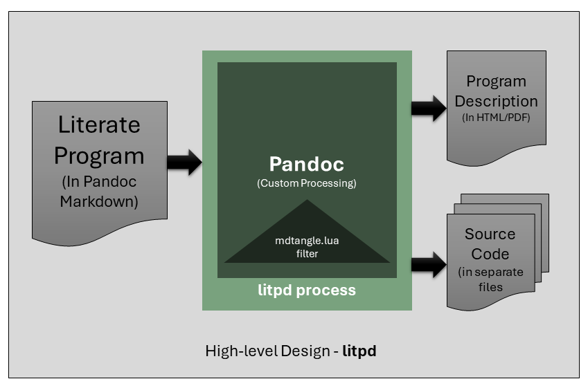

21/03/2024
Revisions
| Version | Date | Comments |
|---|---|---|
| 0.1a-alpha.0 | 21/03/2024 | Initial version |
| 0.1a-alpha.1 | 10/04/2024 | Second alpha release, add code fragments with code_id support. |
| 0.2.0-beta.0 | 18/05/2025 | First beta release, support for powershell and bash scripts and installation procedure documented. |
| 0.3.0-beta.0 | 01/09/2026 | Replace the Lua, PowerShell, and Bash launchers with a cross-platform Python CLI. |
| 0.3.1b0 | 01/09/2026 | Replace temporary code-fragment files with an in-memory filter, organize the filter as code_id chunks, and publish a Python package. |
- Write a program’s code and design in markdown.
- Use litpd to generate the readable and runnable avatars of your program.
- Profit?!!
This document describes a simple literate
programming tool. It is developed for use in my own programming
projects. I use markdown for most documentation, and I use
lua for most of my programming needs these days. This tool
uses pandoc to process a markdown file
to one of the supported printable/publishable outputs supported by
pandoc. The tool also includes a lua filter to process the code blocks
in the literate program document to generate output programs in their
own files.
This tool is itself written as a literate program and can be found at github/litpd
For those unfamiliar to the term “literate programming”, I would refer you to the excellent writings on the topic by Donald Knuth. In short literate programming is about program definition in a document which is written as a work of literature. Therefore one of the primary objectives of a literate program is to be read and enjoyed by another programmer. The literate program document can also be used to create an executable program or a library in the target programming language.
To quickly get started with using the litpd program, follow the instructions to ensure you have the pre-requisites and then install and test the litpd release.
There are two pre-requisites:
The Lua filters are executed by Pandoc. A separate Lua installation is not required.
See the downloads page on the Python website for installation packages and instructions -> Python: Downloads.
Important: Ensure Python is added to the path after installation.
See instructions for your platform at the pandoc website -> Installing Pandoc.
Important: Ensure pandoc is added to the path after installation
The recommended installation method is pipx, which installs the command in an isolated Python environment:
pipx install litpdYou can then run litpd from any directory. Pandoc must
still be installed and available on your PATH.
New-Item -ItemType Directory -Force -Name "litpd"; Set-Location "litpd"; Invoke-WebRequest -Uri "https://github.com/abhishekmishra/litpd/releases/latest/download/litpd.zip" -OutFile "litpd.zip"; Expand-Archive -Path "litpd.zip" -DestinationPath "."mkdir -p litpd && cd litpd && curl -L -o litpd.tar.gz "https://github.com/abhishekmishra/litpd/releases/latest/download/litpd.tar.gz" && tar -xzf litpd.tar.gzIn this section we will run litpd with the sample “Hello World!”
program in the file helloworld.md to generate the html
readable program, and the helloworld runnable programs in various
programming languages.
Open helloworld.md program in your favourite text
editor to see what it looks like.
On Windows, run the Python program with the Python launcher:
# Change to the litpd directory
cd litpd
# Run litpd with helloworld.md
litpd helloworld.md# Change to the litpd directory
cd litpd
# Run litpd with helloworld.md
litpd helloworld.mdYou should now see the following files:
program.html: This is the readable/printable version of
the program.helloworld.lua,helloworld.py,etc.: The runnable
programs generated from helloworld.md.The litpd command-line program is written in Python. Its Pandoc filters are written in the Lua programming language, the language supported by Pandoc’s built-in scripting engine. The goal of the program is two-fold:
The program uses pandoc to perform the generation of the final readable document with minor adjustments. Therefore this part of the program simply delegates to pandoc.
To generate the source code in proper files and structure, we inject a lua filter program into the pandoc processing flow. This program extracts the code from the document and writes it to the target program file(s).
The approach is also described in the High-level design diagram below.

As you have seen in the design diagram above, the litpd process uses
pandoc to generate both the readable and runnable avatars of the
program. The user of litpd interacts directly with the cross-platform
litpd command. This program ensures Pandoc is available,
then starts Pandoc with its bundled Lua filter to get the runnable
avatar of the program. Since the input program is already in Pandoc
markdown format, pandoc can be used trivially to get the readable avatar
of the literate program.
Therefore, the litpd application is composed of the following components:
code_id fragments along the way.The installed distribution is a Python package. Its initializer exposes the same PEP 440 version used in the package metadata.
file: src/litpd/__init__.py"""Literate programming tools for Pandoc Markdown."""
__version__ = "0.3.1b0"The litpd command provides a command line interface to
the literate programming tool. It allows us to run the pandoc conversion
of the literate program document into the publishable document and the
runnable program using the mdtangle.lua filter as well as
compile the output into proper files at the proper locations.
The program has the following parts:
We will discuss each part one by one.
The Python standard library provides everything required by the CLI.
Path is used for reliable cross-platform paths,
shutil locates Pandoc, and subprocess runs it
without invoking a command shell.
#!/usr/bin/env python3
"""Command-line interface for litpd."""
from __future__ import annotations
import shlex
import shutil
import subprocess
import sys
from pathlib import Path
from typing import List, OptionalThe first argument is the input literate-programming document. Any
remaining arguments are passed to Pandoc unchanged. If no Pandoc options
are supplied, litpd generates program.html by default.
VERSION = "0.3.1b0"
USAGE = "Usage: litpd <inputfile.md> [pandoc options]"
def main(args: Optional[List[str]] = None) -> int:
if args is None:
args = sys.argv[1:]
if args and args[0] in {"-V", "--version"}:
print(f"litpd {VERSION}")
return 0
if not args or args[0] in {"-h", "--help"}:
print(USAGE)
return 0 if args else 2
input_file = Path(args[0])
if not input_file.is_file():
print(f"Error: input file not found: {input_file}", file=sys.stderr)
return 2
pandoc = shutil.which("pandoc")
if pandoc is None:
print(
"Error: Pandoc was not found. Install Pandoc and ensure it is in PATH.",
file=sys.stderr,
)
return 127
options = args[1:] or ["--output=program.html"]In the next section of the program we now construct the pandoc command to run such that both the output document, and output code are generated correctly.
tangle_filter variable stores the path to the Lua
Pandoc filter. It collects code_id fragments in memory,
expands them, and writes code blocks marked with code_file
to their target files.
litpd_home = Path(__file__).resolve().parent
tangle_filter = litpd_home / "litpd_filter.lua"
if not tangle_filter.is_file():
print(f"Error: required filter not found: {tangle_filter}", file=sys.stderr)
return 2
command = [
pandoc,
f"--lua-filter={tangle_filter}",
"--from=markdown",
str(input_file),
*options,
]
print("Executing:", shlex.join(command))subprocess.run connects Pandoc directly to the terminal.
A Pandoc failure is returned to the caller as the CLI’s exit status,
making failures visible to scripts, build systems, and continuous
integration.
try:
completed = subprocess.run(command, check=False)
except OSError as error:
print(f"Error: could not start Pandoc: {error}", file=sys.stderr)
return 1
return completed.returncode
if __name__ == "__main__":
raise SystemExit(main(sys.argv[1:]))The litpd_filter.lua program is a pandoc lua filter. A
pandoc filter is a program which is executed by Pandoc during its
filtration phase. The filter has access to the abstract syntax tree
(AST) of the input document. This access allows the filter program to
implement transformations and functionality that are not part of
standard Pandoc processing.
The filter is interested in CodeBlock sections that have
either a code_id or a code_file attribute. The
value of code_id identifies a reusable code fragment. Once
the author creates such a block, it can be referenced from another code
block with @<CODE_ID@>. This lets the document
introduce parts of a program according to the flow of its ideas,
independently of how source code is finally arranged in files.
The same filter first collects every code_id fragment
from the AST into an in-memory table, then expands those references
while writing code_file blocks. It replaces the earlier
two-filter, temporary-file handoff: no fragment files are created in the
working directory.
The filter is itself organized as logical fragments. The final block
at the end of this section assembles those fragments into
litpd_filter.lua.
--- litpd_filter.lua - Pandoc filter for tangling literate-program source files.
-- license: MIT see LICENSE file
-- author: Abhishek Mishra
local fragments = {}
local written_files = {}The first pass visits every code block, including blocks nested in
other structures, and records its text by code_id. This is
the in-memory equivalent of the old extraction step, but its data exists
only for the duration of the Pandoc run.
local function collect_fragments(doc)
doc:walk({
CodeBlock = function(code_block)
local code_id = code_block.attributes["code_id"]
if code_id then
fragments[code_id] = code_block.text
end
end,
})
endReferences are expanded recursively from the in-memory table. Unknown and circular references fail clearly instead of silently producing incomplete code.
id: filter_expandlocal function expand(code, stack)
stack = stack or {}
return (code:gsub("@<([A-Za-z0-9_]+)@>", function(code_id)
local fragment = fragments[code_id]
if not fragment then
error("Unknown code_id: " .. code_id)
end
if stack[code_id] then
error("Circular code_id reference: " .. code_id)
end
stack[code_id] = true
local expanded = expand(fragment, stack)
stack[code_id] = nil
return expanded
end))
endEach code block generated into its own file specifies that output
filename in the fenced block’s code_file attribute. The
first block for a target opens it in write mode; later blocks append.
Therefore a fresh generation replaces old output rather than appending
to it from a previous run. Code blocks continue to receive
id: and file: labels in the readable
document.
local function write_code_block(code_block)
local full_path = code_block.attributes["code_file"]
if not full_path then
return nil
end
local mode = written_files[full_path] and "a" or "w"
local file, error_message = io.open(full_path, mode)
if not file then
error("Could not open " .. full_path .. ": " .. error_message)
end
file:write(expand(code_block.text))
file:write("\n")
file:close()
written_files[full_path] = true
return full_path
end
local function label_code_block(code_block)
local labels = {}
local code_id = code_block.attributes["code_id"]
if code_id then
table.insert(labels, pandoc.Strong(pandoc.Str("id: " .. code_id)))
end
local full_path = write_code_block(code_block)
if full_path then
table.insert(labels, pandoc.Strong(pandoc.Str("file: " .. full_path)))
end
if #labels == 0 then
return nil
end
table.insert(labels, code_block)
return labels
endfunction Pandoc(doc)
collect_fragments(doc)
return doc:walk({CodeBlock = label_code_block})
end@<filter_header@>
@<filter_collect@>
@<filter_expand@>
@<filter_write@>
@<filter_entry@>This project, including its documentation, is licensed under the MIT License.
Potential improvements include: